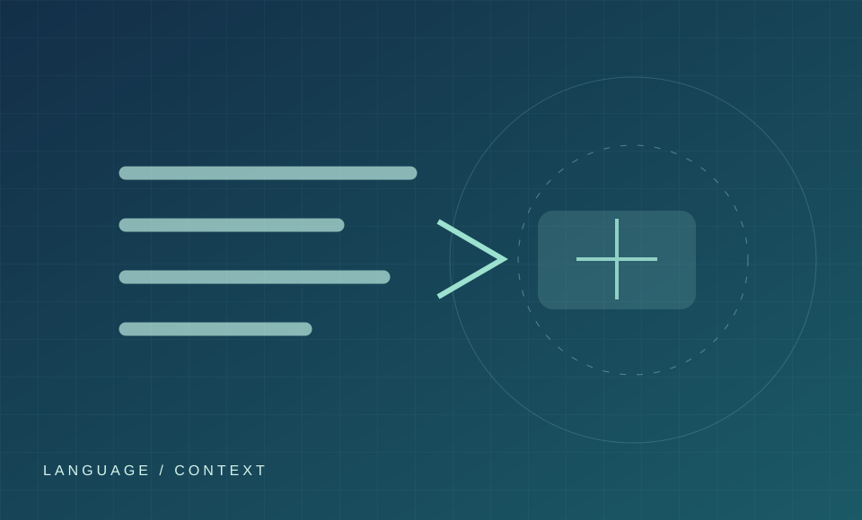
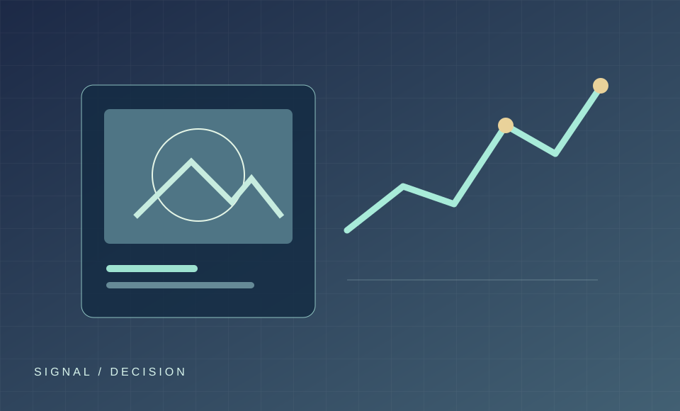

DocFusionX
EU AI Act PDF로 기본 RAG 데모를 제작·테스트하고, 팀원들과 검색 결과를 분석해 하이브리드 검색을 제안하고 함께 구현했습니다.
PERSONAL RESEARCH & PROJECT ARCHIVE
대학원 진학을 준비하는 연구 포트폴리오
자연어처리, AI 의사결정 지원, 공공데이터 활용에 관한 관심과 프로젝트 기획 과정을 기록합니다. 확인된 경험과 앞으로 검증할 질문을 구분해 정리합니다.
01 / RESEARCH
관심 연구 분야는 현재 정리 중입니다. 진행 중인 프로젝트를 마친 뒤 확정해 업데이트합니다.
여러 프로젝트를 진행하며 연구 방향을 탐색하고 있습니다. 주제가 정해지면 이곳에 정리합니다.
02 / SELECTED WORK
상태와 근거가 확인되는 만큼만 공개합니다. 상세 페이지에는 문제, 검토 방법, 확인할 결과를 분리했습니다.
EU AI Act PDF로 기본 RAG 데모를 제작·테스트하고, 팀원들과 검색 결과를 분석해 하이브리드 검색을 제안하고 함께 구현했습니다.
스마트폰 카메라 기반 장서점검을 위한 책등 OCR 데모를 개발 중입니다. 이후 AR 글래스와 로봇으로 확장하는 로드맵을 구상하고 있습니다.
실물 AutoCAR III G 3대를 동시에 제어해 주어진 목표를 달성하는 것을 목표로 합니다. 현재는 단일 차량의 가상 주행과 이동 장애물 회피를 준비하고 있습니다.
카메라로 사과 등급을 판정하고 AMR이 등급별 구역으로 운반하는 과정을 ROS 2·Gazebo로 구현합니다. AMR 주행·물류 파트를 맡아 Nav2 운반 기능을 개발하고 있습니다.
 CAPSTONE
CAPSTONE
컨베이어 공급, RGB-D 비전 분류, 로봇팔 Pick & Place, Nav2 AMR 운송을 하나의 ROS 2 공정 상태 머신으로 통합했습니다. 시드 42 기준 A/B/C 3/3 배송 완료, 테스트 20/20 통과.
부품 입고와 생산라인 일정을 바탕으로 자동차 주문의 예상 납기를 계산하고, 설비 장애 시 영향받는 주문과 납기 대안을 보여주는 에이전트입니다.
 MULTI-AGENT
MULTI-AGENT
6개 AI 에이전트가 투자위원회 역할을 나눠 토론하고, DART 공시 기반 RAG와 코드로 계산한 충격 시나리오를 근거로 투자 검토 보고서 초안을 자동 생성합니다.
암호화폐 선물 데이터를 수집하고, 규칙 기반 후보 생성과 GPT 검토, 리스크 검사, 가상 거래 기록을 연결한 의사결정 지원 도구입니다.

01 / NLP앞선 대화를 함께 읽고 마지막 발화가 반어인지 판별하는 개인 연구 프로젝트. KoCoSa 데이터로 모델을 비교하고 라벨 품질을 직접 검수하며, 국내 학술대회 투고를 목표로 진행 중입니다.

02 / AI SYSTEMVision AI와 트렌드 감지를 활용하는 마케팅 의사결정 지원 시스템 방향. 구현 및 실험 여부는 확인 후 업데이트합니다.
 03 / PUBLIC DATA
03 / PUBLIC DATA전주대 리빙랩 프로젝트. 국토교통부 실거래 데이터로 자취방 가격이 적당한지 판단하고, 예산에 맞는 동네와 두 대학가를 비교하는 웹 서비스를 만들었습니다. 현재 실증을 준비하고 있습니다.
상태 표기 원칙 기획 · 진행 중 · 완료는 확인된 경우에만 사용합니다. 확인되지 않은 항목은 ‘상태 확인 필요’로 표시합니다.
03 / ACTIVITIES
참여 이력과 역할이 확인되면 날짜, 기관, 본인 기여를 기록하는 공간입니다.
공모전, 리빙랩 참여, 학습 모임 등의 활동명과 기간, 본인 역할을 확인한 뒤 추가합니다.
04 / PUBLICATIONS
논문, 포스터, 보고서, 발표 자료는 저자 정보와 공개 가능 여부를 확인한 뒤 게시합니다.
자료가 확정되면 제목, 저자, 발표처, 연도, 원문 링크를 이곳에 추가하세요.
05 / SKILLS & METHODS
프로젝트 설명에서 검토 대상으로 언급된 분야입니다. 실제 사용 경험이나 숙련도를 뜻하지 않습니다.
사용 기술은 수행 프로젝트, 담당 작업, 결과물과 연결해 기술하면 설득력이 높아집니다.
[프로그래밍 언어 · 라이브러리 · 분석 도구를 본인 경험 확인 후 입력]
06 / CV & CONTACT
AI Research Portfolio
CV 링크는 PDF 검토 후 연결합니다.